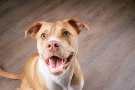
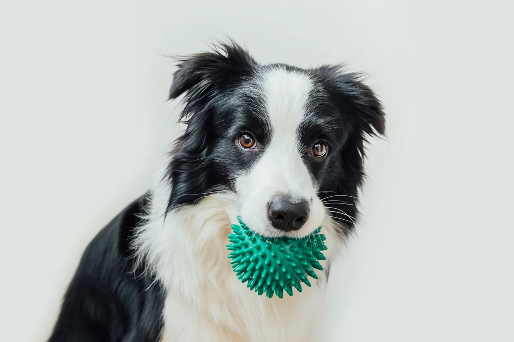

Available Dogs for Adoption

Bella
Sweet and energetic little companion, loves cuddles and short walks.
- Breed: Chihuahua
- Age: 13 years
- Gender: Female
- Weight: 6 lbs

Max
Loyal and intelligent, great for active families and training.
- Breed: German Shepherd
- Age: 1 years
- Gender: Male
- Weight: 16 lbs

Lucy
Playful and affectionate, loves attention and short play sessions.
- Breed: Pug
- Age: 7 year
- Gender: Female
- Weight: 18 lbs

Rocky
Strong and loving, enjoys exercise and human companionship.
- Breed: Pitbull
- Age: 4 years
- Gender: Male
- Weight: 55 lbs

Molly
Highly intelligent and active, perfect for families who love outdoors.
- Breed: Border Collie
- Age: 3 years
- Gender: Female
- Weight: 45 lbs
Charlie
Friendly and gentle, loves children and family activities.
- Breed: Golden Retriever
- Age: 6 years
- Gender: Male
- Weight: 65 lbs